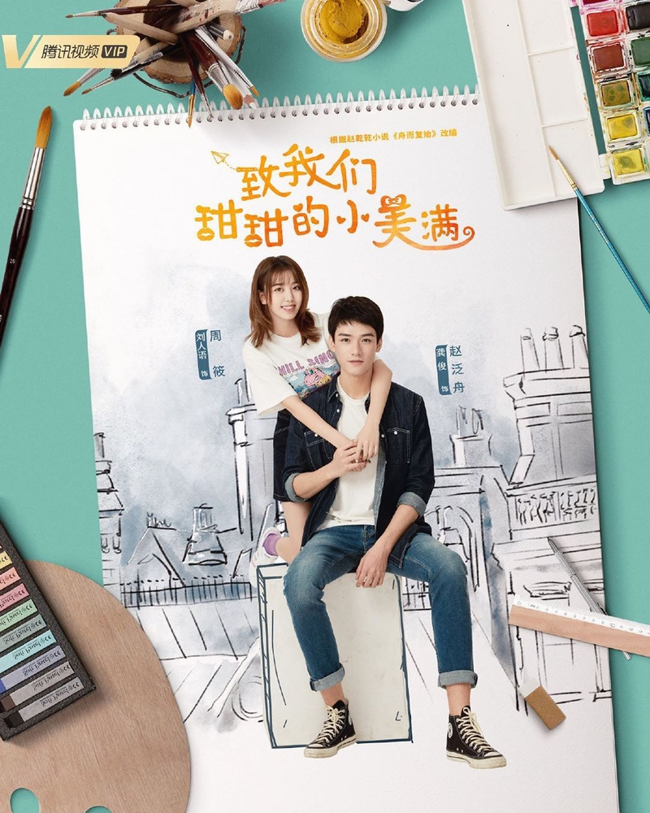

1. The love equations
Judul : The Love Equations / Manisnya Cerita Cinta / 致我们甜甜的笑美满 / Zhi Wo Men Tian Tian De Xiao Mei Man
Genre : School, Romance
Negara : China
Sutradara : Xing Xiao
Produser : Qi Shuai, Sun Jing, Nie Wen
Penulis Skenario : Zhao Qian Qian
Produksi : Tencent Penguin Pictures
Channel TV : Tencent Video, WETV Indonesia
Jumlah Episode : 27 episode, 1 special episode
Plot cerita : Zhou Xiao (Liu Renyu) adalah seorang mahasiswi sastra yang menyukai novel-novel detektif, kriminal dan misterius. Dia wanita yang pintar, berfikir logis dan juga optimis. Zhou Xiao bertemu pria satu kampusnya yang bernama Zhao Fan Zhou (Simon Gong Jun). Pria itu sangat tampan dan ternyata dia jurusan kedokteran forensik. Hal itu membuat Zhou Xiao tertarik dan menyukainya. Tetapi Fan Zhou adalah pria dingin yang sama sekali tidak mengharapkan jatuh cinta dengan seseorang. Zhou Xiao selalu mengejarnya dan akhirnya membuat hubungan tegang yang romantis hingga mereka berdua jatuh cinta. Keduanya saling menjalankan asmara yang indah, namun kisah cinta mereka berakhir dengan patah hati. Karena sebuah kesalahpahaman Zhao Fan Zhou putus dengan Zhou Xiao. Suatu hari mereka dipertemukan kembali.